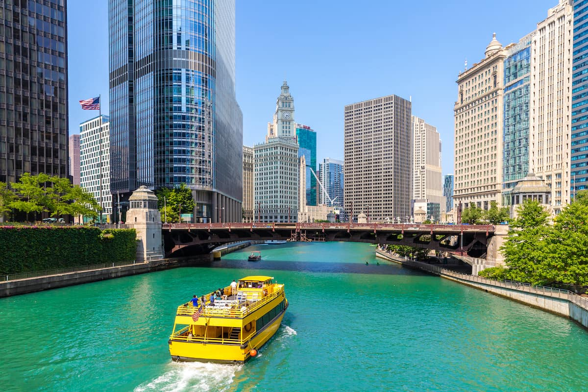

Chicago, Illinois

City Introduction
Chicago is the 3rd largest city by population in the United States and
the most populated city in Illinois. Chicago comprises of 178 official
Chicago neighborhoods. Chicago's shoreline sits alongside the
southwest corner of Lake Michigan. Lake Michigan feeds the Chicago
River, which splits the city and provides unique views and access to
the densely populated "downtown" area of Chicago such as the image
above. The flow of the Illinois river was deliberately reversed via
locks to flow away from Lake Michigan, as this was the primary water
source of the city. The Chicago river now flows down into the Illinois
river, Mississippi river and Des Plaines river, through the Chicago
Sanitary and Ship Canal before feeding downstate.
Chicago is home to many professional sports teams including the Chicago Bears Football team, Chicago Cubs & White Sox baseball teams & the Chicago Blackhawks hockey team.